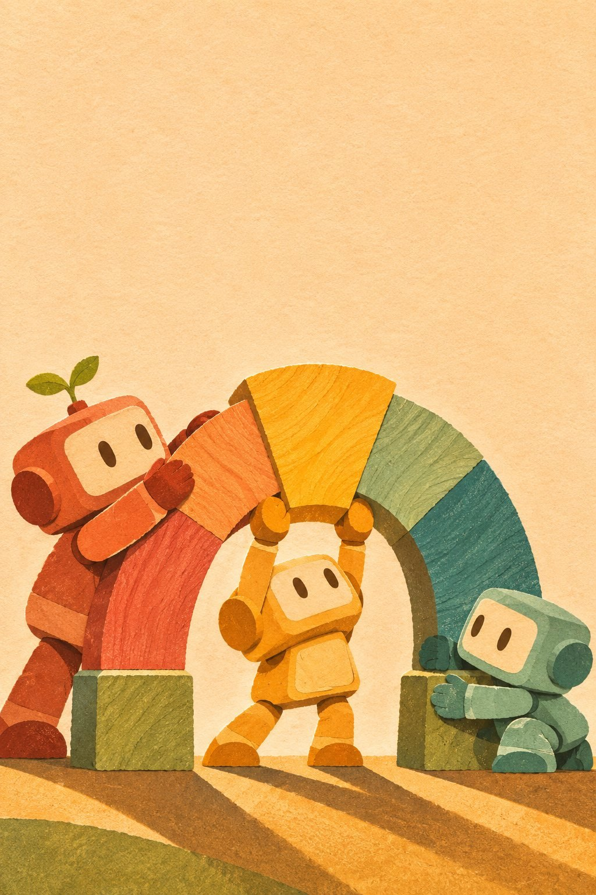
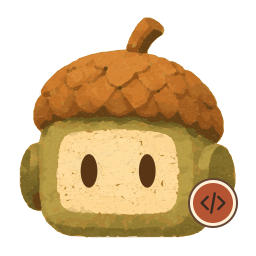
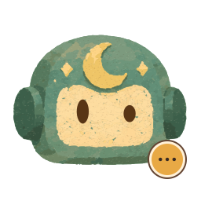
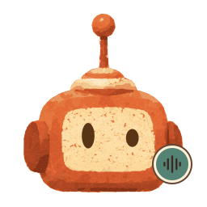
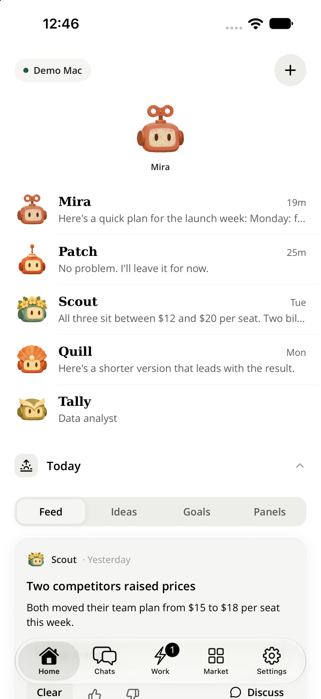
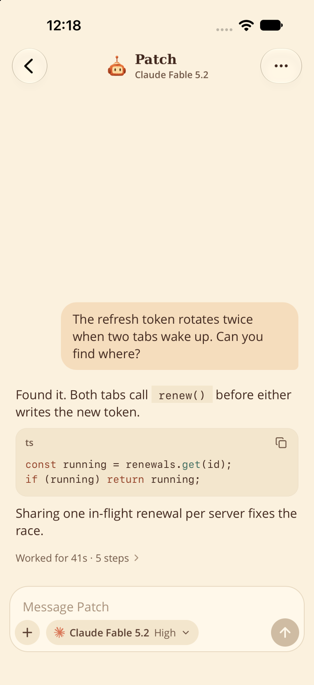
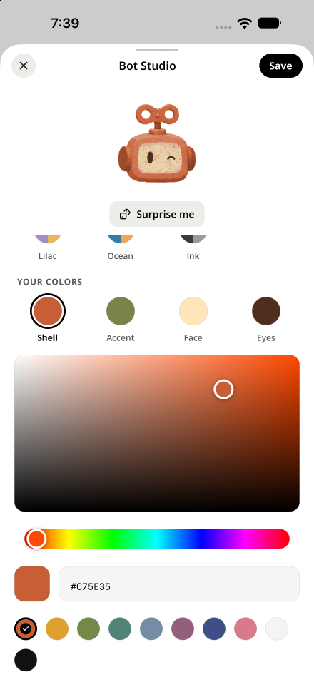

Bot Studio
30 characters. 7 palettes. 6 eye styles. Or your own 4 colors. Each Botkin acts out its work, live.
For macOS, Windows, Linux, iPhone and Android
Botkins gives your bots a home on your computer. They chat, plan, code and run on a schedule. They use the AI plans you already pay for. Your work stays with you.


Chats, memory and notes stay on your disk as plain files.

Sign in with ChatGPT, Claude or Copilot. No new subscription.
You choose what each bot can see, touch and send.
Not one chatbot. A crew of specialists that remember, cooperate and get things done.
30 characters. 7 palettes. 6 eye styles. Or your own 4 colors. Each Botkin acts out its work, live.
Each bot keeps a memory file of your facts and preferences. Read it. Edit it. Clear it.
Put up to six bots in one chat. Use @ to ask one. With Teamwork, bots ask each other for help.
Bots post a Feed, Ideas and Goals, and keep live panels with charts and tables up to date.
Once, daily, weekdays, weekly or cron. The work happens while you sleep.
Later, Ready, Working, Needs you, Done. Ready tasks start on their own. You approve the result.
One shared notebook for goals, projects and people. Plain Markdown files. Export to PDF.
Point a bot at a folder. Choose Default, Plan or YOLO. Review each diff and commit in one click.
Add a skill or a server once. Every bot can use it. Turn it off per bot.
Connect Gmail, Slack, GitHub, Notion and more through your own Composio account.
Dictate, hear replies, or talk live. OpenAI, Azure, ElevenLabs, Gemini or your own server.
See what is left of each plan. Track tokens and cost by bot and model. Export CSV.

Your work lives on your computer. Pair devices directly, or use an optional Botkins profile to find your hosts from another phone or desktop.
The app sends no analytics or usage data to us.
Each AI provider's own tool keeps its own sign-in.
Keys and tokens are encrypted. The system keychain guards the vault. Saved values are never shown again.
A bot gets a one-time handle for a secret. It works only where you approved, and expires in five minutes.
Use 1Password, Bitwarden or Proton Pass. Values are read only when needed.
X25519 and ChaCha20-Poly1305 seal every message between your phone and your computer.
Off by default. When on, it passes sealed messages only. It stores nothing.
Apple and the relay see only "New message". Your phone opens the text.
Risky steps ask first. Unwatched routines and tasks can only read.
Pages that bots make have no network and no file access.
Every release ships with signed SHA256 checksums. Mac builds are notarized.
Read every line. MIT licensed.
Pair your phone with one scan. Then chat, approve and steer from anywhere.


